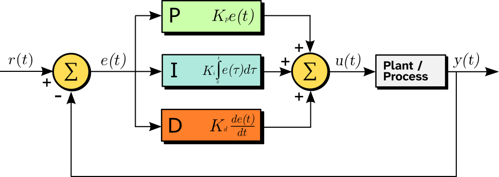
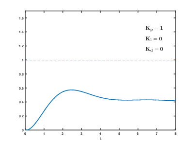
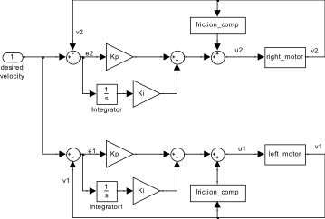
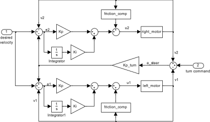

1. SE 423: Introduction to MechatronicsLecture 11: PID ControlMarius Juston
Wednesday, February 25th, 2026
Lecture notes
This is the title slide for SE 423, Introduction to Mechatronics, Lecture 11: PID Control, presented by Marius Juston on Wednesday, February 25th, 2026. The University of Illinois Urbana-Champaign logo sits at the top, over a dark blue background of faint hand-drawn math sketches.
Today you learn PID control: proportional, integral and derivative feedback, how to tune it, and how it applies to Lab 5. First, a few course reminders and a chance for your questions.
2. Reminders
Office Hours:
- Monday: 4-6 PM, Neel
- Tuesday: 11-1 PM, Lakshmi
- Tuesday: 1-3 PM, Samuel
- Tuesday: 2-5 PM, Dan & Marius
Lab: Starting Lab 4 this week. This a 2-week lab!
Homeworks:
- Answers and code submissions for homework 2 are due February 26, 9AM
- Check-offs for homework 3 Ex 1, 2, 3 & 4 are due March 10, 5PM (The end of office hours)
- Check-offs for homework 3 Ex 5 are due March 24, 5PM (The end of office hours)
- Answers and code submissions for homework 3 are due March 25, 9AM
LabVIEW:
- All check-offs for LabVIEW 2 are due February 26, 5PM
Lecture notes
This slide lists this week's reminders under four orange headings: Office Hours, Lab, Homeworks and LabVIEW. The homework and LabVIEW names are hyperlinks to the assignment pages.
Office hours: Monday 4 to 6 PM with Neel. Tuesday 11 AM to 1 PM with Lakshmi, 1 to 3 PM with Samuel, and 2 to 5 PM with Dan and Marius. Tuesday therefore has help available from 11 AM until 5 PM.
Lab: you start Lab 4 this week, and it is a two-week lab. Pace yourself, and do not assume it can be finished in one session.
Homeworks: answers and code submissions for homework 2 are due February 26 at 9 AM, which is tomorrow morning. For homework 3, check-offs for exercises 1, 2, 3 and 4 are due March 10 at 5 PM. Check-offs for exercise 5 are due March 24 at 5 PM. In both cases, 5 PM is the end of office hours. Answers and code submissions for homework 3 are due March 25 at 9 AM.
LabVIEW: all check-offs for LabVIEW 2 are due February 26 at 5 PM, also tomorrow.
Check-offs happen in person, so a check-off deadline at the end of office hours means you need to be demoing to a TA before that time. If you arrive at 4:55, there may be a queue ahead of you.
Next, there is a chance to ask questions about homework, lab or LabVIEW before we move into today's topic, PID control.
3. Questions? (1/2)
Homework, Lab, LabVIEW questions?
Lecture notes
This slide is a pause for questions. It shows the word "Questions?" in large white letters on the dark blue Illinois background, with the prompt "Homework, Lab, LabVIEW questions?" underneath.
Now is your chance to ask about anything from the reminders: the Homework 2 submission, the LabVIEW 2 check-offs, or getting started on Lab 4. After this, the lecture turns to today's topic, PID control, beginning with the difference between open-loop and closed-loop systems.
4. PID Controller (1/18)
Lecture notes
This section title slide reads "PID Controller" in large dark blue text on the orange Illinois background. Faint hand-drawn sketches of equations, a cube, chemical structures and a diagram decorate the edges, with the block I logo at top right and "Systems Engineering" and "Grainger Engineering" along the bottom.
With reminders and questions done, you start the main topic of Lecture 11. First you compare open-loop and closed-loop control, which explains why feedback controllers like PID are needed.
5. PID Controller (2/18)
There are 2 types of controllers:
- Open-Loop systems: Directly dictates the output.
Problems?
Any deviation / noise will cause you to not reach your target.
- Closed-Loop systems: Utilizes feedback to compute an error metric, dynamically correcting the control effort
Lecture notes
This slide sets up the PID material by splitting controllers into two types. The slide is all text: a heading "There are 2 types of controllers," then two bulleted definitions with a "Problems?" question between them.
The first type is open-loop. An open-loop controller directly dictates the output: you pick a command, for example a fixed PWM duty cycle for a motor, and send it without ever checking what actually happened. The slide asks what the problem is, and answers it: any deviation or noise will cause you to not reach your target.
Think of it like this. If I told you to walk blindfolded across the room, you might make it. But if the floor is slippery, someone bumps you, or your steps are a little shorter than you assumed, you drift off course and never know it. A motor behaves the same way: battery voltage drops, friction changes, the robot climbs a slope, and the same command no longer gives the same speed.
The second type is closed-loop. A closed-loop controller uses feedback, meaning a measurement of the output such as an encoder reading, to compute an error metric. The error is the difference between what you want and what you are measuring. The controller then dynamically corrects the control effort based on that error. That is like walking across the room with your eyes open and adjusting each step.
A quick check for you: is commanding a constant duty cycle to the robot's wheels open-loop or closed-loop? Next, you see that the PID controller is the classic closed-loop controller.
6. PID Controller (3/18)
We know it, we love it, it’s the classic PID Controller!
The proportional–integral–derivative (PID) controller is a closed-loop controller.
It is extremely common due to its simplicity, both in the tuning and in the implementation ( you will see how simple it is when you implement it in the code)
Lecture notes
This slide is text only, under the heading "PID Controller." It makes three points. First, an enthusiastic introduction: "We know it, we love it, it's the classic PID Controller!" Second, the proportional–integral–derivative, or PID, controller is a closed-loop controller. Third, it is extremely common because it is simple, both to tune and to implement. The slide adds that you will see how simple it is when you implement it in code.
This follows directly from the previous slide. An open-loop controller dictates the output and never checks the result, so any disturbance or noise keeps you from reaching the target. A closed-loop controller measures what the system is actually doing, compares it with what you want, and uses that error to keep correcting the control effort. PID is the most widely used way to turn that error into a control effort.
PID's simplicity is why you find it everywhere, from motor speed loops to thermostats to drones. You don't need a detailed mathematical model of the plant to get reasonable behavior. You choose three gains and adjust them while watching the response.
On the implementation side, a digital PID on the Red Board comes down to a few lines inside a periodic timer interrupt. Each sample period, you compute the error, keep a running sum for the integral, and take a difference for the derivative.
A quick check before moving on: why can't an open-loop motor command reliably hold a robot wheel at a set speed on carpet versus tile?
Next, we break the name apart and look at each of the three terms and the block diagram that combines them.
7. PID Controller (4/18)
The PID controller is split into 3 parts, as its name states. While each of the terms contribute to improving the output, it is not necessary to use all of them at once.
As the PID controller is a closed-loop controller the input is an error signal , which represents the reference “what you want to be doing” and the currently measured input “what you are doing now”

https://en.wikipedia.org/wiki/Proportional%E2%80%93integral%E2%80%93derivative_controller
Lecture notes
This slide breaks the PID controller into its three parts. The text says each term helps improve the output, but you do not have to use all three at once. Because PID is a closed-loop controller, its input is the error signal e(t) = r(t) - y(t), read "e of t equals r of t minus y of t." Here r(t) is the reference, "what you want to be doing," and y(t) is the measured value, "what you are doing now."
The block diagram, adapted from the Wikipedia article on PID controllers (https://en.wikipedia.org/wiki/Proportional%E2%80%93integral%E2%80%93derivative_controller), reads left to right. The reference r(t) enters a summing junction with a plus sign. The output y(t) is fed back from the far right into the same junction with a minus sign, and the junction produces e(t). The error then splits into three parallel boxes. P computes Kp*e(t), K sub p times the error. I computes Ki times the integral from 0 to t of e(tau) d tau, which is the accumulated past error. D computes Kd*de(t)/dt, K sub d times the rate of change of the error. A second summing junction, with plus signs on all three inputs, adds these into the control effort u(t). The control effort drives the box labeled Plant / Process, whose output is y(t).
Written as one equation, the controller is u(t) = Kp*e(t) + Ki*integral(e) + Kd*de/dt. In words, it responds to the present error, the past error, and the predicted future error.
A common mistake is flipping the sign and computing y - r. That turns negative feedback into positive feedback and makes the system diverge.
Next, we look at each term, starting with P.
8. PID Controller (5/18)
We are going to watch some really good MATLAB videos (I highly recommend looking at them some more!)
There are 2 main problems with the basic implementation of the PID loop in a real-world example. Any ideas?
For the derivative term we decide that it is not worth using and the robot will follow the path well enough. It is usually more recommended to use if you have a sensor the derivative directly!
Lecture notes
This slide is mostly links. The first line says we are going to watch some really good MATLAB videos, linked to the MathWorks video series, and that I highly recommend watching more of them on your own. Below that is a link titled "What is a PID Controller?", which we watch now in class. The slide then asks a question: there are two main problems with the basic PID loop in a real-world system, any ideas? Two bulleted links give the answers, "Integrator Windup" and "Derivative noise," each pointing to a MATLAB video on that topic.
Pause before revealing the bullets and let people guess. Integrator windup happens when the actuator saturates. For example, the motor PWM is already at its limit, but the error persists, so the integral term keeps growing. When the error finally reverses, that large stored integral takes a long time to unwind, and you get big overshoot.
Derivative noise comes from differentiating a measured signal. Small, fast noise has a large slope, so the D term amplifies it. On the robot, velocity estimated from differences of encoder counts is already quantized and noisy, and differentiating it again makes things worse.
That is why the slide says we decide the derivative term is not worth using: the robot follows the path well enough without it. If you do want derivative action, it works better when a sensor measures the derivative directly, such as a gyro measuring angular rate, rather than numerically differentiating noisy data.
Next, we take the three terms one at a time, starting with P.
9. PID Controller (6/18)
Term P is the proportional term. It is simplify defined as,
,
for example, if the error is large, the output control effort will be large and vice-versa.
This is the most fundamental part of the PID loop, you should at least always use this term.
Lecture notes
This slide covers the first of the three PID terms, the proportional term P. The slide text says that P is simply defined as u(t) = K_P * e(t), read "u of t equals K sub P times e of t." It gives the example that if the error is large, the control effort u(t) is large, and vice versa. It ends by saying that this is the most fundamental part of the PID loop and that you should always use at least this term.
Recall from the block diagram a few slides back that the error is e(t) = r(t) - y(t), the reference minus the measured output. The proportional gain K_P is a constant you choose. It sets how hard the controller pushes for each unit of error. For example, with K_P = 2, an error of 3 gives u = 6, and an error of 0.5 gives u = 1. The response is instantaneous: P only looks at the error right now, not its history or trend.
There are two things to watch. First, raising K_P makes the system respond faster but eventually causes overshoot and oscillation. On real hardware, u also saturates; on the Red Board, a motor command can only go up to full PWM duty. Second, a P-only controller often settles with a small leftover steady-state error. As e shrinks, u shrinks too, and that small effort may not overcome friction or a load.
As a quick check, ask yourself: if your robot's wheel stops slightly short of its target speed, would doubling K_P remove the error completely? Mostly not. That leftover error is exactly what the integral term on the next slide fixes.
10. PID Controller (7/18)
Term I accounts for past values of the error and integrates them over time to produce the I term
,
For example, if there is a residual error after the application of proportional control, the integral terms eliminates the residual error by adding some additional control effort.
When the error is eliminated, the integral term will cease to grow.
It is important to bound this component such that it does not explode and make it difficult to control the system. I.e. integrator windup.
Lecture notes
This slide covers the second term of PID, the integral or I term. The text says the I term accounts for past values of the error and integrates them over time. The centered equation reads u(t) = K_I * integral from 0 to t of e(t), meaning "u of t equals K sub I times the integral of the error from time zero to the current time t." Strictly, the integration variable should be a dummy variable, integral from 0 to t of e(tau) d tau, but the idea is the same: you add up all the error so far and multiply by the integral gain K_I.
The slide then makes three points. First, if proportional control alone leaves a residual, or steady-state, error, the integral term removes it by adding control effort. A small constant error keeps accumulating, so the I contribution keeps rising until the output is large enough to push the error to zero. Second, once the error is zero, the integral stops growing. It holds its value, and that held value is exactly the extra effort needed to stay on target. Third, you must bound this term so it cannot grow without limit. That runaway growth is called integrator windup.
Windup happens when the actuator saturates. For example, your PWM is already at its maximum, but the error persists, so the integral keeps growing. When the error finally reverses, that huge stored value must "unwind" before the controller responds, which causes big overshoot. On the Red Board you compute the integral discretely, for example I_k = I_(k-1) + e_k*Ts, so a simple fix is to clamp I_k, or stop accumulating while the output is saturated.
Next, the D term looks at the error's rate of change instead of its past.
11. PID Controller (8/18)
Term D accounts for future values of the error based on the current rate of change of the error.
,
In the real world, sensors are noisy and so collecting the derivative term can be difficult without an additional filter to it.
Lecture notes
This slide introduces the third and last term of the PID controller, the derivative term D. The text says that D accounts for future values of the error based on the current rate of change of the error. The equation, centered on the slide, reads: u of t equals K sub D times the derivative of e of t with respect to time, written u(t) = K_D * de(t)/dt. Below it the slide warns that real sensors are noisy, so computing the derivative term is difficult without an additional filter.
After P, which reacts to the present error, and I, which accumulates past error, D looks ahead. If the error is shrinking quickly, de/dt is negative and the D term pulls back on the control effort before the system overshoots. That is why D is often described as adding damping. It does nothing about a steady error, because the derivative of a constant is zero.
On the Red Board you compute this in discrete time, for example de/dt ≈ (e_k - e_(k-1))/dt. Here is where noise hurts. Suppose the encoder or ADC reading jitters by a small amount and your sample period is 1 ms. Dividing by dt = 0.001 multiplies that jitter by 1000, so the D term chatters and the motor buzzes. The usual fix is to low-pass filter the derivative, using the filtering ideas from earlier in the course, or to average over several samples.
Quick check: if dt gets smaller, does the noise in a raw difference derivative get better or worse? Next, the three terms combine into the full PID form.
12. PID Controller (9/18)
The full form is thus,
,
Simple as that!
Lecture notes
The slide shows the complete PID control law, built from the three terms covered on the previous slides. It reads: "The full form is thus," followed by the equation u(t) = K_p*e(t) + K_I*integral from 0 to t of e(t) dt + K_D*de(t)/dt. In words: the control effort u at time t equals the proportional gain times the current error, plus the integral gain times the error accumulated from time zero up to now, plus the derivative gain times the rate of change of the error. The slide ends with "Simple as that!"
Here e(t) is the error, the reference minus the measured value. Each term contributes something different. The P term reacts to the error right now. The I term reacts to past error and removes the steady-state residual that P alone leaves. The D term anticipates future error from its current slope, which adds damping. Strictly, the integral runs over a dummy variable, the integral from 0 to t of e(tau) d(tau), so that it is not confused with the upper limit t.
On the Red Board you do not compute a continuous integral or derivative. The controller runs once per sample period dt, so you approximate both. The integral becomes integral_k = integral_(k-1) + e_k*dt. The derivative becomes (e_k - e_(k-1))/dt, usually filtered because, as the last slide warned, sensor noise makes a raw difference jumpy.
"Simple as that" is only half true. The equation is simple, but the real implementation also needs output saturation and protection against integrator windup. The next slide shows those pieces in C code.
Quick check: if you set K_I = K_D = 0, which controller remains, and what error would you expect it to leave behind?
13. PID Controller (10/18)
#define MAX_EFFORT 10.0f
struct PID {
float Kp;
float Ki;
float integral;
};
float saturate(float input, float satVal){
input = (input > satVal)? satVal : input;
input = (input < -satVal)? -satVal : input;
return input;
}
int sign(float x){
if (x > 0.0f) return 1;
if (x < 0.0f) return -1;
return 0;
}
float PIControl(float reference, float target, float dt, struct PID *pidState){
if (dt <= 0.0f) return 0.0f;
float error = reference - target;
// Compute integral
float integral = pidState->integral + error * dt;
// Compute PI using tentative integral
float effort = pidState->Kp * error +
pidState->Ki * integral;
// Saturate control input
float effortSat = saturate(effort, MAX_EFFORT);
// Anti-windup condition
// The output is saturating
// The error is the same sign as the controller output
if(!(effort != effortSat && sign(effort) == sign(error))){
pidState->integral = integral;
}
return effortSat;
}
Lecture notes
This slide turns the PID equation from the previous slide into C code. It implements a PI controller, proportional plus integral with no derivative term, and adds integrator anti-windup.
The left column holds the helpers. MAX_EFFORT is defined as 10.0f. A struct named PID stores three floats: Kp, Ki, and integral, the running sum of error. The function saturate(input, satVal) clamps input to the range minus satVal to plus satVal using two ternary operators. The function sign(x) returns 1 if x is positive, -1 if negative, and 0 if zero.
The right column is PIControl(reference, target, dt, pidState). It first returns 0 if dt is zero or negative, which guards against a bad time step. Here "target" is the measured value you are tracking, so error = reference - target. The code then computes a tentative integral, integral = pidState->integral + error*dt. It forms effort = Kp*error + Ki*integral and saturates it to plus or minus MAX_EFFORT, giving effortSat.
The key step is the anti-windup check. The integral is saved back into the struct unless two things are both true: the output is saturating (effort != effortSat), and the error has the same sign as the effort. In that case, integrating further would only push harder against a limit the actuator cannot exceed. This is called windup, and it causes large overshoot once the error finally reverses. The function always returns effortSat.
A common mistake is updating the integral unconditionally. Your control output then stays pinned at its limit long after the error changes sign.
Quick check: if the effort is clamped at +10 but the error is negative, does the integral update? Yes, because the signs differ, so integrating helps pull the output out of saturation.
The next slide shows this same clamping scheme as a block diagram.
14. PID Controller (11/18)
![Block diagram: clamping integrator anti-windup in a PID controller. Integrator anti-windup keeps the integrated value from growing past a limit; clamping, which turns the integrator off, is highlighted over back-calculation and observer methods. Error feeds proportional, derivative, and integrator blocks whose sum passes a clamping saturation limit to become the actuator command, then the saturating actuator. A switch feeds the integrator 0 instead of error when both hold: the output is saturating (pre- and post-limit values differ), AND the error has the same sign as the controller output.](L11_files/6bb26bcd8fa3.png)
Lecture notes
This slide is a hand-drawn block diagram from the MathWorks video "Understanding PID Control, Part 2," linked at the bottom of the slide. It explains integrator anti-windup, which keeps the integrated value from growing past some specified limit. Three methods are listed: clamping, back-calculation, and the observer approach. Clamping, which simply turns the integrator off, is the one highlighted, and it is the one you just saw in code on the previous slide.
In the diagram, the error signal feeds three branches: derivative, proportional, and integrator. The integrator input passes through a switch. In the "don't clamp" position the switch passes the error, and in the "clamp" position it passes 0. The three branches are summed, then go through a clamping saturation limit, a box with a flattened S-shaped line that is the standard symbol for saturation. That limited signal is the actuator command, which drives the real actuator, which saturates too, to produce the actuator output.
The logic that drives the switch is the key part. A not-equal block compares the controller output before and after the limit, giving 1 if they differ, meaning the output is saturating. Two sign blocks output 1 for positive and -1 for negative, one for the error and one for the controller output, and an equals block checks whether those signs match. An AND block combines the two conditions: clamp only when the output is saturating AND the error has the same sign as the output. Map this to the if statement in PIControl: the integral is updated only when that AND is false.
Quick check: if the output is saturated but the error has flipped sign, should the integrator run? Yes, because integrating then pulls the output back out of saturation.
Next, we move on to tuning the gains.
15. Tuning
Lecture notes
This section slide reads "Tuning" in large white text over an orange underline. The dark blue background carries faint hand-drawn engineering sketches that are decorative only.
So far you have built the PID controller and implemented a PI controller in C with saturation and clamping anti-windup. The remaining question is how to choose the gains Kp, Ki and Kd. Next comes the MathWorks tuning flowchart, and then the manual tuning method you will use in lab.
16. PID Controller (12/18)
![Flowchart: PID tuning guide. If the system is not well-behaved (highly nonlinear, open-loop unstable, lots of delay, or non-minimum phase), use advanced methods. If it is well-behaved and you have a model, go to model-based tuning. If you have hardware, you can tweak gains directly, derive a model from first principles, or run an input sequence. An input sequence leads to system identification (then model-based tuning), heuristic initial guesses, or automatic tuning. Model-based tuning uses automatic tuning or manual methods (pole placement, loop shaping, heuristics). All paths end with tweaking gains manually.](L11_files/9927b256ed0c.png)
Lecture notes
This slide shows a flowchart called the PID tuning guide, taken from the MathWorks video "Understanding PID Control, Part 4: A PID Tuning Guide" (https://www.mathworks.com/videos/understanding-pid-control-part-4-a-pid-tuning-guide-1531124725727.html). It is drawn in white and yellow text on a black background, with red arrows connecting the boxes.
The chart starts with one question: is your system well-behaved? If not, go to advanced methods. Systems that are not well-behaved are highly nonlinear, open-loop unstable, have lots of delay, or are non-minimum phase. Non-minimum phase means the output first moves the wrong way before heading toward the target. If the system is well-behaved, the path splits in two.
If you have a model, you go to model-based tuning. From there you choose a tuning method. One option is automatic tuning. The other is manual design such as pole placement, loop shaping or heuristic rules.
If you have physical hardware, you have three choices. You can derive a model from first principles and rejoin the model-based branch. You can run an input sequence and record the response. Or you can go straight to tweaking gains. The recorded response feeds three things: system identification, which builds a model from the data; heuristic methods that give an initial guess; or automatic tuning.
The key observation is that every path ends in the same box: tweak gains manually. Even a well-designed controller gets its final adjustments on the real system.
Your robot's motors in lab are well-behaved, and you have the hardware in front of you. So in this class you take the shortest route, straight to manual tuning. The next slide gives the step-by-step recipe.
17. PID Controller (13/18)
In this class we will only be doing manual tuning, it is just intuition based but given that there are only 3 gains, it is fast to find appropriate constants!
The manual method for tuning is simple:
- Set all gains to 0 and start at 1
- Keep increasing until the output of the system causes it to oscillate
- Then set approximately half that value
- Then increase until any offset is corrected
- Then, optionally, increase to remove overshoot
Usually, has the highest magnitude, next and then .
Lecture notes
This slide gives the tuning method you use in this class: manual tuning. It is intuition based, but with only three gains you can find workable constants quickly. On the flowchart from the previous slide, every path ended with tweaking gains by hand. Here you go straight to that step.
The slide lists five numbered steps. First, set all gains to zero, then set the proportional gain, K_p, to 1. Second, keep increasing K_p until the system output starts to oscillate. Third, set K_p to roughly half of that oscillation value. Fourth, increase the integral gain, K_I, until any steady-state offset is removed. Fifth, and optionally, increase the derivative gain, K_D, to reduce overshoot. A final line notes that K_P usually has the largest magnitude, K_I is next, and K_D is the smallest.
Here is why the steps come in this order. K_p sets how hard the controller pushes against the current error. Too much K_p causes oscillation, so halving the oscillating value leaves you a margin of stability. Proportional control alone usually leaves an offset, and the integral term removes it by accumulating error over time. The derivative term reacts to how fast the error is changing, so it damps the response and reduces overshoot.
A common mistake is changing two gains at once. Change one gain at a time and watch the response after each change. The starting value of 1 also depends on your units. On the robot, a sensible first guess depends on how error maps to control effort, so scale it accordingly.
The next slide shows the step response you get after step one, with proportional control only.
18. PID Controller (14/18)
| Parameter | Rise time | Overshoot | Settling time | Steady-state error | Stability |
|---|---|---|---|---|---|
| Decrease | Increase | Small change | Decrease | Degrade | |
| Decrease | Increase | Increase | Eliminate | Degrade | |
| Minor change | Decrease | Decrease | No effect in theory | Improve if small |

Lecture notes
This slide summarizes how each PID gain affects a step response. It has a table from the Wikipedia article on PID controllers (manual tuning section, link at the bottom of the slide: https://en.wikipedia.org/wiki/Proportional%E2%80%93integral%E2%80%93derivative_controller#Manual_tuning) and a step-response plot below it.
The table has one row per gain and columns for rise time, overshoot, settling time, steady-state error and stability. The row labels are small images; the rows are Kp, Ki and Kd in that order.
Increasing Kp decreases rise time, increases overshoot, changes settling time only a little, decreases steady-state error, and degrades stability.
Increasing Ki decreases rise time, increases overshoot, increases settling time, eliminates steady-state error, and degrades stability.
Increasing Kd changes rise time only slightly, decreases overshoot, decreases settling time, and in theory has no effect on steady-state error. In the original Wikipedia table, Kd improves stability if Kd is small.
The plot shows the closed-loop step response with Kp = 1, Ki = 0 and Kd = 0, which is proportional control only, for time t from 0 to 8. The output rises to a peak of about 0.57 near t = 2.5, then settles around 0.42. It never reaches the setpoint of 1, which is drawn as a dashed line.
That leftover gap is the steady-state error that P-only control leaves. Raising Kp shrinks the gap but adds overshoot. Adding Ki removes the gap completely, because the integral keeps growing as long as any error remains.
This table is the reasoning behind the manual tuning steps on the previous slide. Next, you try these effects yourself in an online simulator.
19. PID Controller (15/18)
We can try out the effect of gains here!
https://www.luisllamas.es/en/pid-controller-simulator/
Lecture notes
This slide has a single line of text, "We can try out the effect of gains here!", followed by a link to an online PID controller simulator: https://www.luisllamas.es/en/pid-controller-simulator/
The simulator lets you change Kp, Ki and Kd and immediately see how the closed-loop response changes. Use it to practice the manual tuning recipe from two slides ago. Start with all gains at 0. Raise Kp until the output oscillates, then cut it to about half. Next, add Ki until the steady-state offset disappears. Finally, add a little Kd if you want to reduce overshoot.
As you go, watch for the same behavior as the proportional-only plot on the previous slide. With Kp alone, the output settles below the setpoint. Adding Ki is what closes that gap. Try pushing Ki too high as well, and notice how it adds overshoot and oscillation.
Building this intuition now pays off in Lab 5. There you tune two PI controllers, one per wheel motor, to track a desired velocity, which is what the next slide shows.
20. PID Controller – Lab 5

We have 2 PI controllers for setting the motors to the desired velocity
We computed the velocities from last lab
Technically not necessary since this is a feedback controller but helps with improving performance
We have a desired velocity we want the robot to go at
Lecture notes
This slide brings the PID ideas into Lab 5, where you control the speed of both wheels on the robot. The block diagram has one input on the left, a constant labeled "desired velocity," which is the speed you want the robot to drive at. That single command splits into two identical loops: the right motor on top and the left motor on the bottom.
In each loop, a summing junction subtracts the measured wheel velocity from the desired velocity. For the right wheel that gives e2 = v_desired − v2, and for the left wheel e1 = v_desired − v1. The error then goes down two parallel paths, both highlighted in red boxes. One path multiplies the error by Kp. The other passes it through an integrator, drawn as 1 over s, and then multiplies by Ki. The two paths add together, so each box is a PI controller with no derivative term.
After the PI output, a block called friction_comp is added. It takes the measured velocity as its input, and the sum is the control effort, u2 or u1, sent to the motor. The motor's output velocity feeds back to the start of the loop. As the annotation says, you already computed v1 and v2 from the encoders in the last lab.
Friction compensation is technically optional because feedback would eventually correct the error anyway. It helps because it supplies the effort needed to overcome friction directly, so the PI terms don't have to make it up.
Recall the proportional-only step response, which never reached the setpoint. Ask yourself which term in this loop removes that steady-state error.
Next, we add a turn command so the two wheels can run at different speeds.
21. PID Controller (16/18)

We have 2 PI controllers for setting the motors to the desired velocity
We have a desired velocity we want the robot to go at
We have a desired turn rate we want the robot to go at
Lecture notes
This slide shows the full Lab 5 block diagram. It extends the previous one by adding a second input: a desired turn rate, labeled "turn command." Red annotations point to the desired velocity input on the left, the turn command input on the right, and the two red-boxed PI controllers, one per motor.
The structure of each PI loop is the same as before. The top loop is the right motor and the bottom loop is the left motor. In each loop, the error goes through gain Kp and, in parallel, through an integrator (1/s) and gain Ki. Those two paths are summed, a friction_comp term based on that wheel's measured velocity is added, and the result is the control effort u2 for right_motor or u1 for left_motor.
The new part is on the right side of the diagram. The measured wheel velocities are combined with the turn command to form a steering error: e_steer = turn + v2 - v1. That error is multiplied by Kp_turn and fed back into both velocity loops with opposite signs:
e2 = vref - v2 - Kp_turn*e_steer for the right motor.
e1 = vref - v1 + Kp_turn*e_steer for the left motor.
So one steering correction speeds one wheel up and slows the other down. The robot's average speed still tracks vref, while the difference between the two wheel speeds tracks the turn command.
Notice that the turning loop is proportional only. You have one gain, Kp_turn, and there is no integrator on e_steer.
A common lab mistake is getting a sign wrong in e_steer or in how it enters e1 and e2. When that happens, the robot turns the opposite way or spins out of control. Next, we walk through these three error terms one at a time, starting with why the steering error is built from the difference between the wheel velocities.
22. PID Controller (17/18)
We have 3 error terms,
First, we have the steering error
If we tell the robot to turn right (), we expect the right wheel to move faster than the left wheel.
This is because in a differential drive system, the yaw rate is proportional to the difference between the right and left velocities
Lecture notes
This slide is titled PID Controller and opens with "We have 3 error terms." The first is the steering error, e_steer(t). The centered equation reads: e steer of t equals omega r of t minus the quantity v l of t minus v r of t, written e_steer(t) = omega_r(t) - (v_l(t) - v_r(t)). Here omega_r(t) is the turn command from the block diagram on the previous slide, and v_l and v_r are the measured left and right wheel velocities.
The slide then states that if you tell the robot to turn right, meaning omega_r(t) > 0, you expect the right wheel to move faster than the left. The reason given is that in a differential drive robot the yaw rate is proportional to the difference between the right and left wheel velocities: omega is proportional to v_r - v_l.
The key idea is that a differential drive robot has no steering wheel. It turns only by running its wheels at different speeds. The steering error therefore compares the turn rate you asked for with a turn rate estimated from the measured wheel-speed difference.
If you expand the bracket, e_steer = omega_r + v_r - v_l. This matches the "turn command plus v2 minus v1" on the last slide's diagram, where v2 is the right wheel and v1 is the left.
A common mistake is getting the sign wrong. As written, e_steer goes to zero when v_l - v_r equals the turn command. Trace the signs through your Lab 5 code to confirm which wheel speeds up for a positive turn command on your robot.
Next, you see how e_steer feeds into the two wheel-velocity errors, which gives the other two error terms.
23. PID Controller (18/18)
Now we have the Left Motor error , receives positive feedback from the turning loop
Now we have the Right Motor error , receives negative feedback from the turning loop
This cross couples the control loops for the steering and the velocity control. Such that you have a feedback loop for making the robot steer. And then a separate control loop to reach the robot’s target individual motor velocity.
Lecture notes
This slide finishes the cross-coupled controller from the block diagram on slide 21. It gives the two motor error terms, each built from the velocity error plus a share of the steering error.
The left motor error receives positive feedback from the turning loop. In words, e sub l of t equals v sub r of t minus v sub l of t, plus K steer times e steer of t: e_l(t) = v_r(t) - v_l(t) + K_steer*e_steer(t).
The right motor error receives negative feedback from the turning loop: e_r(t) = v_r(t) - v_l(t) - K_steer*e_steer(t).
Read v_r here as the reference, or desired, robot velocity, not the right wheel. The middle term is the measured velocity of that motor's own wheel. In the block diagram this is e1 = desired velocity - v1 + Kp_turn*e_steer for the left wheel, and e2 = desired velocity - v2 - Kp_turn*e_steer for the right wheel. So in the right motor equation, read the subtracted velocity as the right wheel's velocity.
The key idea is the push-pull structure. The steering correction is added to one wheel and subtracted from the other by the same amount. That changes the difference between the wheel speeds, which sets the yaw rate. It leaves their average roughly unchanged, and the average sets forward speed. The result is two cooperating loops. The steering loop drives e_steer toward zero, and each wheel's PI loop, with friction compensation, still tracks the target velocity. K_steer sets how aggressively steering errors are corrected.
A common mistake is flipping the sign on one side. The robot then turns away from the command and the steering error grows instead of shrinking. Quick check: if e_steer is positive, which wheel speeds up, and does that reduce e_steer?
Next, we open the floor for questions.
24. Questions? (2/2)
Lecture notes
This slide shows the word "Questions?" in large white letters on the dark blue Grainger Engineering background, which has faint hand-drawn equations, chemical structures and diagrams. The Illinois logo is in the top right corner.
This is a pause for questions on PID control, from the P, I and D terms through tuning to the coupled steering and wheel-velocity loops you implement in Lab 5. To check your understanding, ask yourself this: if you command a right turn, which motor's error gets the positive steering feedback, and why?
25. End of Lecture 11
Lecture notes
This closing slide is the Grainger College of Engineering branding page: a white Block I logo and the words "The Grainger College of Engineering, University of Illinois Urbana-Champaign" on an orange background, with faint hand-drawn sketches of a flow-element cube with its equations, a sphere, chemical structures, and an arrow diagram. That ends Lecture 11. You covered the PID controller, tuning, its use in Lab 5, and cross-coupling the turning loop with the left and right motor velocity loops so your robot can steer while tracking speed.